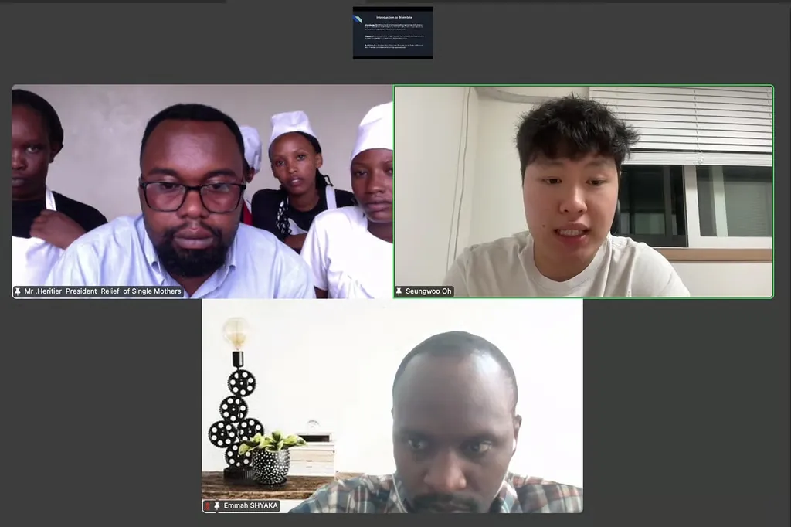
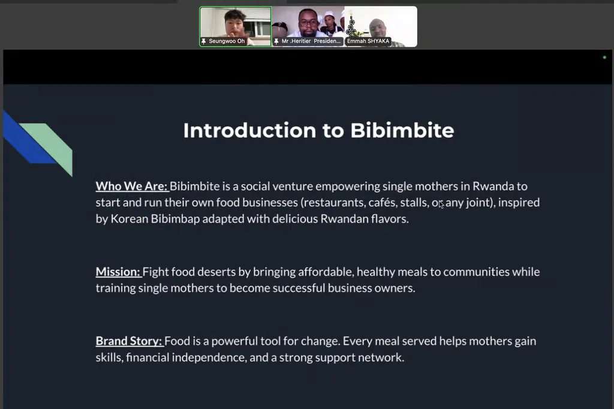
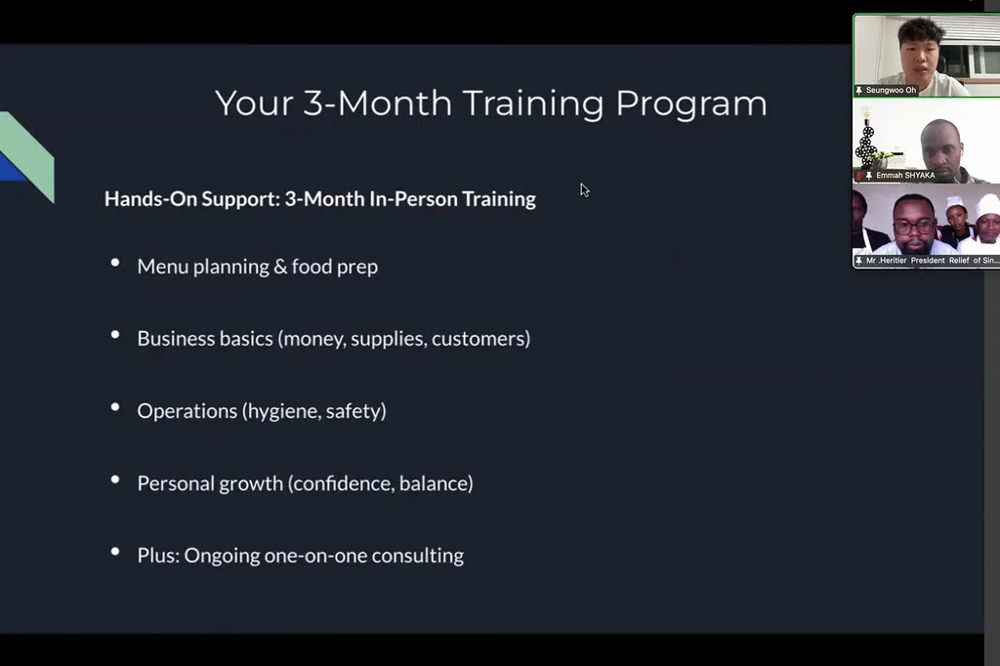

News
Program updates from BibimBite.
Empowering Single Mothers in Rwanda: Bibimbite's Virtual Presentation Kickoff

In a motivating virtual session held recently 22/Dec/2025, Bibimbite founder Seungwoo Oh presented the project's vision and training roadmap directly to our single mother participants. This focused online meeting was designed to inspire and prepare them for success in launching their own food businesses.
Attending were the aspiring single mother entrepreneurs (our program "students"), the president of the Rwanda Single Mothers Organization (RSMO)—our vital implementing partner—Seungwoo Oh as founder, presenter, and project lead, project mentor Emmah Shyaka from Youth Impact, and Jae Jin Lim, CEO of Youth Impact. Youth Impact's expertise in youth empowerment, entrepreneurship training, and social impact initiatives strengthens our collaborative efforts.

Seungwoo's presentation emphasized Bibimbite's core purpose: empowering single mothers facing financial hardship, social stigma, and limited flexible work by training them in culinary skills, baking, menu planning with local Rwandan ingredients, business basics, hygiene, operations, and personal confidence-building. Through this 3-month hands-on program—plus ongoing one-on-one mentoring—participants learn to create affordable, nutritious Korean-Rwandan fusion meals that combat food insecurity, attract customers (locals, expats, professionals, tourists), and generate income for independence.
The session highlighted the power of every meal served: building skills, financial stability, community support, and healthier families—one balanced dish at a time.

Looking ahead
For the future, Bibimbite aims to train over 50 single mothers initially, serve 5000+ meals, and expand to multiple locations. Most importantly, we are building sustainability: once trained, these mothers will become trainers themselves, with each one equipped to teach culinary and baking skills to at least 500 more women. This peer-to-peer "train-the-trainer" approach will create a growing network of empowered entrepreneurs uplifting their communities.
Seungwoo's clear, passionate delivery made the purpose shine: turning challenges into thriving businesses and lasting change. Murakoze cyane to all who joined—we're just getting started!